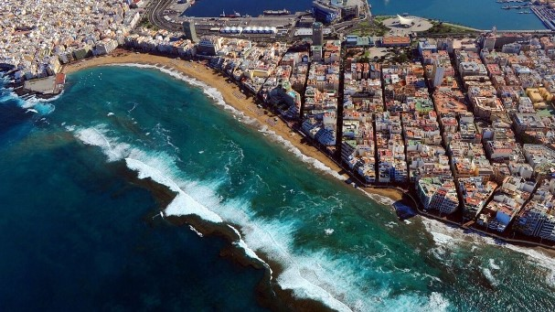
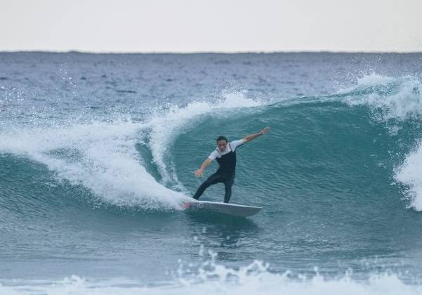

La playa por zonas
Conoce las distintas áreas de las canteras y las oportunidades que ofrecen.
Leer más

Práctica tu deporte favorito
Elige tu deporte acuático favorito dentro de una gran variedad.
Leer más